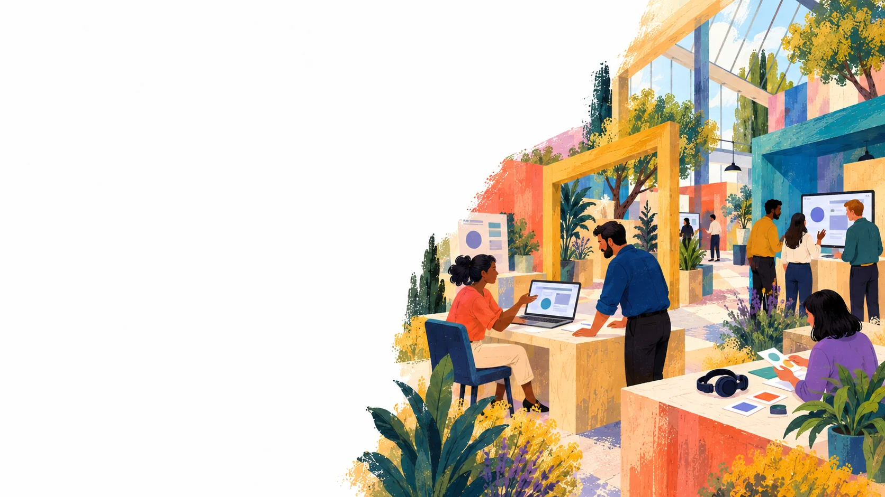

See the people recruited, the work organised and the reported results. These engagements cover learning, language and data research, developer activation, product testing and specialised hiring.

Story library
{{ countText }}
{{ c.thumbLabel }}
WolofLocal contextSkills↓Agreed research task
Role brief
“Explore the product and record your observations.”